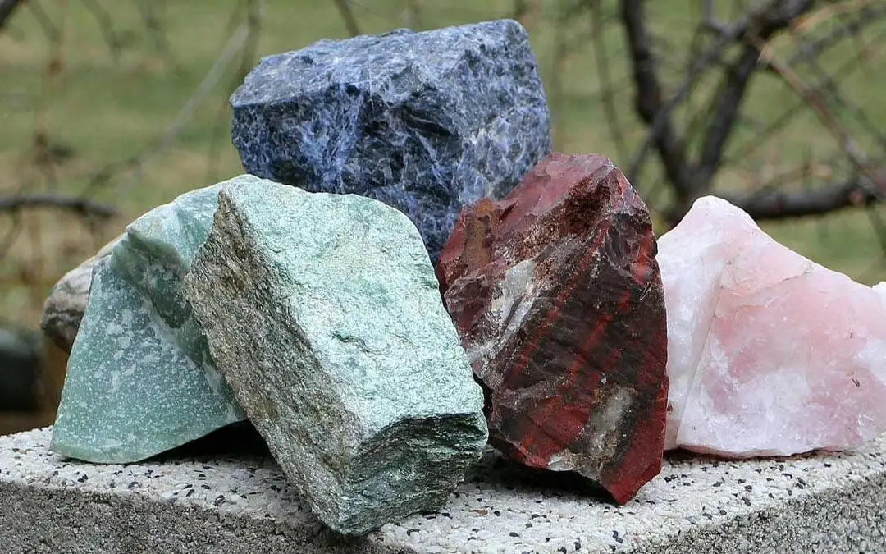

We develop what lies beneath.
From the resources beneath Tanzania's surface to the industries they support, we approach natural resources with a long-term view of responsible development, value creation and opportunity.
From the resources beneath Tanzania's surface to the industries they support, we approach natural resources with a long-term view of responsible development, value creation and opportunity.
Natural Resources
Jubesa Farm Tanzania Limited engages in natural-resource development with a focus on identifying opportunities, supporting productive operations and creating long-term commercial value. Our interests extend across minerals and other resources that contribute to Tanzania's industrial and economic potential.

Mineral resources
Our natural-resource activities extend across a range of minerals, creating opportunities for responsible development, commercial activity and long-term value.
A significant mineral resource with established commercial and economic importance.
An industrial metal supporting infrastructure, manufacturing and broader economic activity.
A valuable mineral with applications across industrial and commercial markets.
A distinctive Tanzanian gemstone with unique identity and international commercial potential.
Exploring opportunities across valuable mineral resources and their potential commercial applications.
Resources supporting industrial processes and applications across different sectors.
Mineral-based resources connected to agricultural productivity and the wider value chain.
Resource development
Natural resources create value when opportunity is matched with responsible development. Our approach considers the resource, the operation and the long-term value it can create.
Identifying resource opportunities with meaningful commercial potential.
Understanding the resource, its characteristics and the opportunities surrounding its development.
Building productive operations around responsible resource development and long-term value.
Connecting natural resources with markets, industries and opportunities that extend beyond extraction.